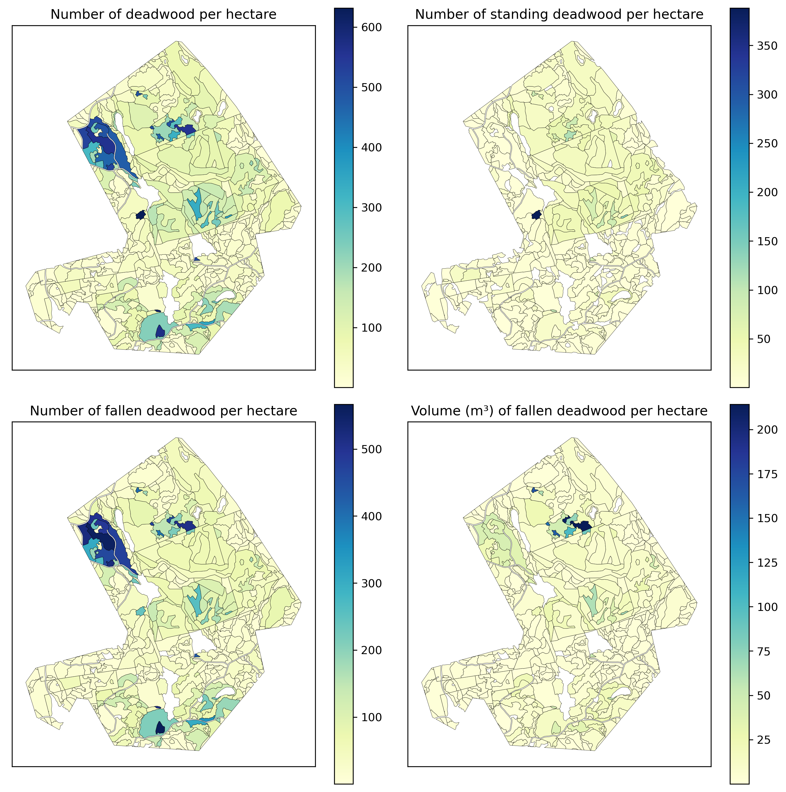
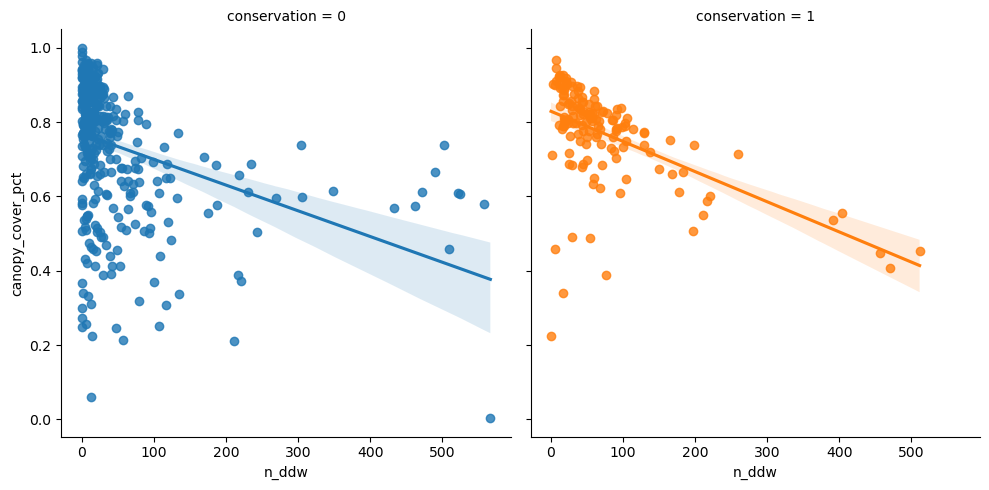

Code
from drone_detector.utils import *
from drone_detector.imports import *
import warnings
warnings.filterwarnings("ignore")
sys.path.append('..')
from src.tree_functions import *
from tqdm import tqdm
tqdm.pandas()
import seaborn as snsAs individual deadwood instances are not that useful as a final product, here we show how they can be further processed to more useful data.
from drone_detector.utils import *
from drone_detector.imports import *
import warnings
warnings.filterwarnings("ignore")
sys.path.append('..')
from src.tree_functions import *
from tqdm import tqdm
tqdm.pandas()
import seaborn as snsRead files for stand data, borders for valid area in UAV imagery and full predictions.
spk_stands = gpd.read_file('../../data/evo/MV_Hämeenlinna/MV_Hämeenlinna.gpkg', layer='stand')
spk_borders = gpd.read_file('../../data/evo/sudenpesankangas/spk_valid.geojson')
spk_results = gpd.read_file('../../results/evo/sudenpesankangas/full/spk_full_310826.gpkg', layer='predictions')Clip stand data to only contain relevant areas.
spk_stands = spk_stands.clip(spk_borders)Attach tree length, diameter and volume to predictions.
spk_results.head()| label | score | layer | geometry | |
|---|---|---|---|---|
| 0 | 1 | 0.748620 | uprightwood | POLYGON ((403139.067 6788066.734, 403139.019 6... |
| 1 | 1 | 0.959675 | uprightwood | POLYGON ((403127.426 6788097.439, 403127.377 6... |
| 2 | 1 | 0.940683 | uprightwood | POLYGON ((403142.900 6788100.835, 403142.851 6... |
| 3 | 1 | 0.632036 | uprightwood | POLYGON ((403134.750 6788104.570, 403134.702 6... |
| 4 | 1 | 0.966496 | uprightwood | POLYGON ((403129.778 6788124.094, 403129.754 6... |
spk_results['tree_length'] = spk_results.geometry.progress_apply(get_len)
spk_results['diam'] = spk_results.geometry.progress_apply(lambda row: np.mean(get_three_point_diams(row))) * 1000
spk_results['v_ddw'] = spk_results.geometry.progress_apply(cut_cone_volume)100%|███████████████████████████████████████████████████████████████████████████| 74395/74395 [02:27<00:00, 504.67it/s]
100%|███████████████████████████████████████████████████████████████████████████| 74395/74395 [06:34<00:00, 188.58it/s]
100%|███████████████████████████████████████████████████████████████████████████| 74395/74395 [09:42<00:00, 127.78it/s]Drop most obvious faulty groundwood detections (those with volume more than 5m³). These are for instance roads, gray rooftops etc.
spk_results.drop(spk_results[(spk_results.v_ddw > 5) & (spk_results.layer == 'groundwood')].index, inplace=True)Check the total amounts of deadwood present.
spk_results.layer.value_counts()groundwood 60509
uprightwood 13831
Name: layer, dtype: int64Derive the following:
n_dw: the number of deadwood instances per hectaren_ddw: the number of fallen deadwood instances per hectaren_udw: the number of standin gdeadwood instances per hectarev_ddw: the estimated volume of fallen deadwood per hectarespk_stands['n_dw'] = spk_stands.progress_apply(lambda row: len(spk_results[spk_results.geometry.within(row.geometry)])
/ row.area, axis=1)
spk_stands['n_ddw'] = spk_stands.progress_apply(lambda row: len(spk_results[(spk_results.geometry.within(row.geometry))
& (spk_results.layer=='groundwood')])
/ row.area, axis=1)
spk_stands['n_udw'] = spk_stands.progress_apply(lambda row: len(spk_results[(spk_results.geometry.within(row.geometry))
& (spk_results.layer=='uprightwood')])
/ row.area, axis=1)
spk_stands['v_ddw'] = spk_stands.progress_apply(lambda row: spk_results[(spk_results.geometry.within(row.geometry))
& (spk_results.layer=='groundwood')].v_ddw.sum()
/ row.area, axis=1)100%|████████████████████████████████████████████████████████████████████████████████| 526/526 [01:39<00:00, 5.27it/s]
100%|████████████████████████████████████████████████████████████████████████████████| 526/526 [01:49<00:00, 4.81it/s]
100%|████████████████████████████████████████████████████████████████████████████████| 526/526 [01:49<00:00, 4.81it/s]
100%|████████████████████████████████████████████████████████████████████████████████| 526/526 [01:44<00:00, 5.02it/s]
Better maps are done in QGis (use Jenks breaks).
Add information about conserved areas
protected_area = gpd.read_file('../../../../FEO/CDDA_2021_v01_public.gpkg', layer='ProtectedSite')
protected_area = protected_area[protected_area.siteName == 'Sudenpesänkankaan suojelualue']
protected_area = protected_area.to_crs(spk_stands.crs)
spk_stands['conservation'] = spk_stands.geometry.apply(lambda row: 1 if row.buffer(-1).within(protected_area.iloc[0].geometry)
else 0)Add stand-wise canopy density.
import rasterio.mask as rio_mask
pcts = []
with rio.open('../../data/evo/ChmEvo_norm.tif') as src:
crs = src.crs
for row in tqdm(spk_stands.itertuples()):
plot_im, plot_tfm = rio_mask.mask(src, [box(*row.geometry.bounds)], crop=True)
pcts.append(plot_im[plot_im > 2].shape[0] / plot_im[plot_im >= 0].shape[0])
spk_stands['canopy_cover_pct'] = pcts526it [00:07, 69.67it/s] See if any correlation can be seen for number of detected trees and canopy cover.
fig, ax = plt.subplots(1,2, dpi=300, figsize=(10,5))
spk_stands[spk_stands.n_dw > 0].plot(column='n_ddw', legend=True, ax=ax[0], cmap='YlGnBu',
edgecolor='black', linewidth=.2).set_title('n_ddw')
spk_stands[spk_stands.n_udw > 0].plot(column='canopy_cover_pct', legend=True, ax=ax[1], cmap='YlGnBu',
edgecolor='black', linewidth=.2).set_title('canopy_cover_pct')
plt.show()Not much, aside for perhaps the areas in the upper-central stands.
Next see effect of canopy cover and different deadwood types, separated by conservation.
sns.lmplot(data=spk_stands, x='n_dw', y='canopy_cover_pct', hue='conservation', col='conservation')<seaborn.axisgrid.FacetGrid>Aggregated n_dw
pd.pivot_table(data=spk_stands, index=['conservation'], values=['n_dw'],
aggfunc=['min', 'max', 'mean', 'median','std', 'count'], margins=True)| min | max | mean | median | std | count | |
|---|---|---|---|---|---|---|
| n_dw | n_dw | n_dw | n_dw | n_dw | n_dw | |
| conservation | ||||||
| 0 | 0.000000 | 631.790744 | 52.090442 | 19.745502 | 98.545014 | 381 |
| 1 | 3.995206 | 553.470919 | 100.909354 | 71.261682 | 103.233080 | 145 |
| All | 0.000000 | 631.790744 | 65.548127 | 29.410884 | 102.121836 | 526 |
Same for n_udw.
sns.lmplot(data=spk_stands, x='n_udw', y='canopy_cover_pct', hue='conservation', col='conservation')<seaborn.axisgrid.FacetGrid>Canopy cover seems not to affect standing deadwood detections.
pd.pivot_table(data=spk_stands, index=['conservation'], values=['n_udw'],
aggfunc=['min', 'max', 'mean', 'median','std', 'count'], margins=True)| min | max | mean | median | std | count | |
|---|---|---|---|---|---|---|
| n_udw | n_udw | n_udw | n_udw | n_udw | n_udw | |
| conservation | ||||||
| 0 | 0.0 | 388.329980 | 6.500767 | 2.411091 | 21.967670 | 381 |
| 1 | 0.0 | 137.254902 | 27.411903 | 23.857527 | 23.109761 | 145 |
| All | 0.0 | 388.329980 | 12.265244 | 4.077489 | 24.150758 | 526 |
Seems to be clear difference between conserved and managed forests, as mean values differ a lot.
Then n_ddw.
sns.lmplot(data=spk_stands, x='n_ddw', y='canopy_cover_pct', hue='conservation', col='conservation')<seaborn.axisgrid.FacetGrid>
Clear-ish that denser canopy means fewer detections.
pd.pivot_table(data=spk_stands, index=['conservation'], values=['n_ddw'],
aggfunc=['min', 'max', 'mean', 'median','std', 'count'], margins=True)| min | max | mean | median | std | count | |
|---|---|---|---|---|---|---|
| n_ddw | n_ddw | n_ddw | n_ddw | n_ddw | n_ddw | |
| conservation | ||||||
| 0 | 0.0 | 566.716642 | 45.589675 | 14.925373 | 90.948590 | 381 |
| 1 | 0.0 | 511.257036 | 73.497452 | 49.458449 | 86.954054 | 145 |
| All | 0.0 | 566.716642 | 53.282883 | 21.543022 | 90.646476 | 526 |
Conserved forests generally have more fallen deadwood instances than managed.
Then v_ddw.
sns.lmplot(data=spk_stands, x='v_ddw', y='canopy_cover_pct', hue='conservation', col='conservation')<seaborn.axisgrid.FacetGrid>
pd.pivot_table(data=spk_stands, index=['conservation'], values=['v_ddw'],
aggfunc=['min', 'max', 'mean', 'median','std', 'count'], margins=True)| min | max | mean | median | std | count | |
|---|---|---|---|---|---|---|
| v_ddw | v_ddw | v_ddw | v_ddw | v_ddw | v_ddw | |
| conservation | ||||||
| 0 | 0.0 | 54.578953 | 4.757696 | 1.494159 | 8.503932 | 381 |
| 1 | 0.0 | 214.149358 | 17.851251 | 8.164946 | 35.245017 | 145 |
| All | 0.0 | 214.149358 | 8.367136 | 2.428219 | 20.672735 | 526 |
Difference in the estimated volume of downed deadwood per hectare between conserved and managed forests is clear.
Finally v_ddw and n_ddw:
sns.lmplot(data=spk_stands, x='v_ddw', y='n_ddw', hue='conservation', col='conservation')<seaborn.axisgrid.FacetGrid>Fallen deadwood in conserved forests are clearly smaller.
Some tasks, such as Zonation analyses, require data to be aggregated to 16x16m grid. First make that kind of grid.
from itertools import product
gridsize = 16
xmin, ymin, xmax, ymax = spk_results.total_bounds
cells = []
for x, y in tqdm(product(np.arange(xmin, xmax+gridsize, gridsize),np.arange(ymin, ymax+gridsize, gridsize))):
x1 = x - gridsize
y1 = y + gridsize
cells.append(box(x,y,x1,y1))58534it [00:00, 120200.79it/s]Then define some functions that get the information.
def get_n_dw(row, trees, tree_sindex):
nearest_idx = list(tree_sindex.nearest(row.geometry.bounds))
tempdf = trees.iloc[nearest_idx]
return len(tempdf[tempdf.geometry.intersects(row.geometry)])
def get_n_udw(row, trees, tree_sindex):
nearest_idx = list(tree_sindex.nearest(row.geometry.bounds))
tempdf = trees.iloc[nearest_idx]
tempdf = tempdf[tempdf.layer == 'uprightwood']
return len(tempdf[tempdf.geometry.intersects(row.geometry)])
def get_n_ddw(row, trees, tree_sindex):
nearest_idx = list(tree_sindex.nearest(row.geometry.bounds))
tempdf = trees.iloc[nearest_idx]
tempdf = tempdf[tempdf.layer == 'groundwood']
return len(tempdf[tempdf.geometry.intersects(row.geometry)])
def get_v_ddw(row, trees, tree_sindex):
nearest_idx = list(tree_sindex.nearest(row.geometry.bounds))
tempdf = trees.iloc[nearest_idx]
return tempdf[tempdf.layer=='groundwood'].clip(row.geometry).v_ddw.sum()Attach the information to grid cells.
grid = gpd.GeoDataFrame(cells, columns=['geometry'], crs=spk_results.crs)
trees_sindex = spk_results.sindex
grid['n_dw'] = grid.progress_apply(lambda row: get_n_dw(row, spk_results, trees_sindex), axis=1)
grid['n_udw'] = grid.progress_apply(lambda row: get_n_udw(row, spk_results, trees_sindex), axis=1)
grid['n_ddw'] = grid.progress_apply(lambda row: get_n_ddw(row, spk_results, trees_sindex), axis=1)
grid['v_ddw'] = grid.progress_apply(lambda row: get_v_ddw(row, spk_results,
trees_sindex), axis=1)100%|███████████████████████████████████████████████████████████████████████████| 58534/58534 [02:26<00:00, 400.86it/s]
100%|███████████████████████████████████████████████████████████████████████████| 58534/58534 [04:48<00:00, 202.91it/s]
100%|███████████████████████████████████████████████████████████████████████████| 58534/58534 [03:20<00:00, 291.94it/s]
100%|███████████████████████████████████████████████████████████████████████████| 58534/58534 [04:14<00:00, 230.02it/s]Plot n_dw.
grid[grid.n_dw > 0].plot(column='n_dw', legend=True, figsize=(20,12), cmap='YlGnBu').set_title('n_dw in 16m grid')Text(0.5, 1.0, 'n_dw in 16m grid')Plot n_udw
grid[grid.n_udw > 0].plot(column='n_udw', legend=True, figsize=(20,12), cmap='YlGnBu').set_title('n_udw in 16m grid')Text(0.5, 1.0, 'n_udw in 16m grid')Plot n_ddw
grid[grid.n_ddw > 0].plot(column='n_ddw', legend=True, figsize=(20,12), cmap='YlGnBu').set_title('n_ddw in 16m grid')Text(0.5, 1.0, 'n_ddw in 16m grid')Plot v_ddw
grid[(grid.v_ddw > 0)].plot(column='v_ddw', legend=True, figsize=(20,12), cmap='YlGnBu').set_title('v_ddw in 16m grid')Text(0.5, 1.0, 'v_ddw in 16m grid')